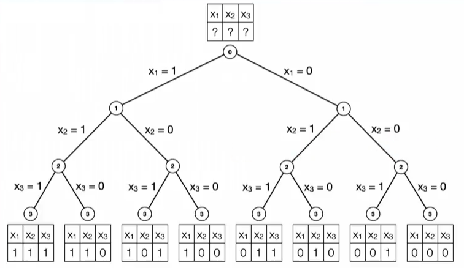
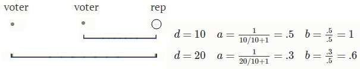

Selecting a group of people to represent a nation is an example of what computer science calls a search problem, an assignment problem, and a load balancing problem. Distributing goods in an economy is a problem of supply and demand. These problems have something in common. We would like to sell to the highest bidder. Representatives should be the candidates who got the most votes.
Also, there is a moral problem. There is demand for representation that is not being met. Because we have single winner districts, the winner doesn't even need 50% of the vote to win the right to represent all the voters. Some voters are able to get a great deal on their politicians, while other voters could have pooled their votes across districts and elected a more valuable representative.
Let's get started on the computer science. We'll construct a mathematical model of the load balancing problem, implement this model in the Python programming language with an optimization package called Gurobi, and compute and visualize an optimal solution.
The implementation of the model and the structure of this explanation is forked from the work of Emilien Dupont (on github and hosted as a featured example on Gurobi's website). The code for this website is on github.
Northern England gets rid of district boundaries because there was too much debate about where the boundaries should go. It wants to pick 5 reps (representatives). And it wants to space them out instead of having them all from the middle. It wants regional interests to be represented and it doesn't want all the seats to be taken by people from the same neighborhood in the middle of Northern England.
Several good candidates have decided to run, but it remains to decide which should win.
Selecting reps from the middle of Northern England would be advantageous as they would have the most votes overall. However, voters from the middle of Northern England would be overrepresented and voters from the coast would be very far from their from their reps.
We will find the optimal tradeoff between reps being near all the voters and voters having reps nearby.
Our problem is related to a very famous problem in computer science called the knapsack problem. It differs in many ways. It is similar in how it can be solved. Both are kinds of binary search. A search problem tries to find a combination of variables that is in some way the best combination. One way to approach such a problem is the branch and bound method. Here is a video on the branch and bound method from a fantastic Coursera course in the field of discrete optimization. From this video, just understand that there is a large number of possible choices to make and that they can all be organized in a tree structure. (The actual algorithm for searching through the tree will be taken care of by Gurobi, and we don't talk about it below.) We still haven't said what the score is for each choice (or path) in the tree, so let's do that. Most of the writing below is about that. Each choice in the tree represents whether a candidate wins. The first split is for the first candidate, the second split is for the second candidate, etc.

This tree is not for the problem at hand, but our problem is similar because it has the same binary variables $x_i$.
Let us now formulate a mathematical model for our problem.
We need to say when a candidate wins. Let's list all the candidates as can #1, can #2, can #3, etc, and let's make variables for each one. If can #1 wins, then $x_1=1$ and if can #2 loses, then $x_2=0$. Basically, $x_j$ is binary. \[ x_j = \left\{\begin{array}{ll} 1 & \text{if we choose can #j, }\\ 0 & \mathrm{otherwise.} \end{array}\right. \] We set a constraint on the $x_j$ variables because there are only a limited number of seats in the legislature. We set the sum of all $x_j$ to this number of seats. \[ \sum_{j \in Reps} x_j = \text{number of seats} \]
We need to say how close a voter is to a candidate. Let's list all the voters as voter #1, voter #2, etc, and let's make measurements for each voter and candidate combination. If the distance between voter #1 and can #3 is 100 km, then $d_{13}=100$. \[ d_{ij} = \text{distance between voter i and rep j} \]
What does a ballot look like? We want to make this problem easy to show on a map so we're going to make a simplification of the problem. We're going to let the voters give scores. This is actually nicer for the voters because they get to say what they think of every candidate. Also, voters will base their score entirely on how far away the candidate is. Basically, the score will be the inverse of distance. \[ \begin{array}{ll} a_{ij} & = {\displaystyle \frac{1}{d_{ij}/10 + 1} } & \text{Inverting distance}\nonumber \\ b_{ij} & = {\displaystyle a_{ij} * \frac{1}{\max_{m \in Voters}{a_{mj}}}} &\text{Ballot normalized} \nonumber \end{array} \]
The 10 is here for scaling distance. The extra 1 is here to avoid dividing by 0. Really, there are many choices for this function. One more modification we make is to allow voters who don't have a candidate nearby to vote with their full vote for their closest candidate. This is normalization.

We need a way to count the ballots. The easiest way is to add them together to get the tallies for each candidate. \[ tally_j = \sum_{i \in Voters} b_{ij} \]
If we stop here then we just end up picking the candidates in the middle because they have the highest tallies.
We want to avoid overrepresenting the middle voters because they would be getting representation for cheap. Think of the price of a seat in parliament as the number of voters represented by it. We want as much representation as possible. We also want to avoid overrepresentation. Think of the value of a vote as a fraction of a seat in parliament. We want to spread vote value evenly so that each voter has fair representation.
Our solution is to let the reps keep a fraction of their voters' ballots. Voters have reps, so it makes sense that the reps get to keep the voters, too. Each rep must keep the same amount of votes. The idea of the rep keeping some votes is not new. The election method called Single Transferable Vote (STV) does the same thing. It is different because it doesn't use scores. It uses ranking. Still, it is very similar. When a candidate is declared a winner, he keeps a "quota" of votes and the rest of the votes go to the voters' second choices. \[ \text{STV quota} = \frac{\text{voters}}{\text{seats} + 1} \] The quota is set as the number of voters divided by the number of seats to fill with reps. An additional 1 is added to the number of seats because of the iterative nature of STV (a longer explanation is needed). Basically, this quota is the price of a seat in parliament, and only those candidates with enough cash (votes) can pay this price.
Something similar also happens when deciding how many seats each state gets in the US House of Representatives. Think of it like an auction. The price starts off low and there are too many bidders and not enough seats. In an auction the price goes up until there are exactly the number of bidders left to buy all the items. It's basically the same with seats except the seats are "paid" for by population numbers.
We can flip that around so that the auction house gets a higher price. We can start at a high price and then lower it until we have enough buyers. Likewise, for the House, we can start at a high number of voters required for a seat. As we lower the requirement, we assign seats to the states that can pay until all the seats are filled. It's easy to grasp because we are filling the seats one by one. Note that this method assings the seats proportionally, so a state with twice the population will have twice as many seats:
Also, instead of price or voters-per-seat, think of the amount of representation a voter gets, the vote value. Vote value starts low and is increased until one representative can be bought. The process goes one representative at a time until we fill all 435 seats.
This is Jefferson's method, and it was the first method used by the US House of Representatives. It lasted for 50 years until being replaced by Webster's method, a slight variation. Jefferson's method ensured that no state got a special deal on representation when another state would have deserved it more. In this way, the states each had representation in proportion to their population.
This method can be represented as an election. In this election, the ballots are pretty simple since every voter approves all the candidates from their state. \[ b_{ij} =1 \ \ \ \ \ \forall \ j \in Reps \ , \ i\in Voters \ \ \text{in the same state.} \\ \] Also, the candidates (or seats) are all identical and a state just gets a number of seats instead of individual representatives.
Now we have a different way to look at Jefferson's method of apportionment. We can make a graphical representation of vote value. Let's call it y. Each vote will be represented with a box of height y and width 1. We combine many boxes together into a block, a bigger box. The block's width is the number of voters:
The area is what you get when you multiply the vote value (seats per vote) by the number of voters. So the area is 1 seat. Every candidate's block has an area of 1. We can write this mathematically, with v for voters, as \[ v_j * y_j=1 \ \forall \ j \in Reps \] We can also restate this for every individual voter with the constraint that votes are by state. \[ \begin{array}{rl} b_{ij} &=1 \ \ &\forall \ j \in Reps \ , \ i\in Voters \ \ \text{in the same state.} \\ \sum_{i \in Voters} b_{ij} * y_{ij}&=1 \ &\forall \ j \in Reps \\ y_{ij} &= 1/v_j \ \ &\forall \ j \in Reps\ \text{who win} \\ \end{array} \]
The constraint above means each representative has the same amount of representation to give to his voters. So a thinner block (less voters) will need to be taller (give more value to each vote). Let's apply this to the apportionment example from above.
$ \approx $
It is clear in this graph that the reason there are less green representatives is that there are less green voters. The vote value of green voters is the total height of the green blocks (since they each get 2 reps).
Is this proportional? Yes. Approximately. Because we have to have whole numbers of representatives, we can't represent each kind of voter exactly equally. Blue voters get a higher vote value. The best we can do is to make sure that nobody is getting a special deal on representation. There is nobody who has the votes needed for a seat that doesn't already have a seat. Every representative deserves his seat. There is no better way to stack the blocks.
What was our method of getting to this solution? Well, we stacked the blocks evenly so that no stack would be too tall. This is the shortest we can stack this number of blocks. In doing so, we kept the value of each vote nearly the same. We can state this stacking principle in math terms: \[ \text{Minimize} \max_{i \in Voters} \sum_{j \in Reps} y_{ij} \] This is a load balancing problem. The idea of elections as a load balancing problem was developed by Lars Edvard Phragmén, a Swedish professor of mathematics and editor of Acta Mathematica feared for his ability to point out flaws in other people's work. This particular method is called max-Phragmen. There is another method called var-Phragmen, and he advocated for a sequential method able to be calculated by hand, seq-Phragmen. My point, and Phragmen's point, is that Jefferson's method is a specific example of a general problem of load balancing.
How can we adopt Jefferson's method with individual voters' ballots? Using parties to replace states is not a good idea because voters don't exactly fall into parties and not all party candidates are equal. Also, this gives too much power to political parties. We have a set of ballots with important information about who a voter would feel represented by. So let's try to use it.
How do we deal with this situation? The two candidates above are very similar and share some supporters. The voters who like both have a high vote value while the voters on one side or the other don't have as much vote value. Actually, the voters who like both could solve this by each deciding to pick one or the other. And that is an interesting idea. What would happen?
So the problem is solved. We just need to split this middle group of voters. We can also split them a different and equivalent way that makes more geometric sense. It just looks like the two blocks are being smushed together:
(This looks like Phragmen Tetris.)
Mathematically, we allow the blocks to smush together by removing some constraints on this vote value. \[ y_{ij} \stackrel{?}{=} 1/v_j \] We let this vote value be a variable. Not every vote value should be the same. Some voters will vote for two representatives. We need to allow a voter's value to add up from all the candidates his vote helped elect. We still want this total vote value to be the same for all voters. The optimizing force ensures that will happen and that there will be an "even build" of these liquid blocks.
Since we are relaxing some constraints on y, we want to make sure it still is constrained in some ways that make sense. Let's restate everything about our new liquid block model: \[ \begin{array}{rll} 0 \leq y_{ij} \leq 1 & \text{Vote value. Voter i bought this fraction of a seat for rep j.} \\ \\ y_{ij} \leq x_j & \text{Candidate j cannot represent anyone if he is not elected.} \\ \\ {\displaystyle \sum_{i \in Voters}y_{ij}*b_{ij}=1} \ & \text{The price of each seat is the same.} \ \ \ \forall j \in \text{Reps who win.} \\ \\ {\displaystyle \text{Minimize} \max_{i \in Voters} \sum_{j \in Reps} y_{ij}} & \text{The representation of each voter is fair.} \end{array} \]
Basically, what this tries to do is to find groups of voters who can pool their votes to support a representative. This pool is liquid. It can move to get the best representation. The action of minimization is animated here as a smushing force:
In addition to adjusting the distribution of the "representation liquid", we can also change which candidates are selected. Broader candidates will have an easier time smushing into other candidates.
$ \rightarrow $ $ \approx $
They don't have to be too broad, though. The red example above has 2 candidates and they split the vote evenly. The red-blue combination achieves the same objective score as the yellow-blue combination, which means red doesn't have to be as broad as yellow. And still red is a better option than green because red is broader than green.
So a best-combination of candidates could include a set of candidates that are very local, but each have very high ratings among a community of a size at least as big as the number of voters divided by the number of seats. This is the same basic rule that was found in STV.
Another big topic is proportionality. Proportionality is important because if a party decides to split, then its voters should still get represented just the same. Actually, we have already seen a party split in an animation above. There need to still be enough members to support a candidate if there is a party split.
The big point is this: by enforcing Jefferson's method's principle of "no special deals", the representation is spread out in proportion to population. In the same way, by enforcing the same "no special deals" principle to our pool approach, we can reach a proportional outcome.
Now consider scores. Voters will want to rate some candidates in between others. One might be a 10 out of 10 while another is a 6 / 10 and another a 0.
This is the ballot. To represent score, we use shading. These are 2 voters, left and right. They both like the green and blue candidates. The left voter gave green a 10/10 and blue a 6/10. Vice versa for the right voter. Now imagine the box is 3-D and there is a colored fluid in it. A thicker box will look darker. Thickness is the score, the b term, how much a voter liked a candidate. Another way you could think about drawing this is to spin the containers by 90 degrees so that you can see the thickness, and we will show that for just one drawing.
Width is not a good representation of score because we are already using this dimension to represent a number of voters. Also, a voter is indivisible, so we can't do the kind of flows we showed above. There is a different kind of smushing going on for a single voter.
How do we smush these two candidates together? We can squeeze on the less dense parts to move the representation to the more dense parts. That lets the candidates fit better together.
A liquid flows between the boxes, which are kind of like balloons because they can stretch and have different pressures. The flow makes sense because voters are being assigned to candidates they rated more highly.
Let's look at 3 candidates just for fun:
We can also change which candidates are selected. In the context of scores, a better choice of representatives might have thicker containers.
$ \rightarrow $
This is good for everyone. These are the candidates with the highest ratings.
Stated in formal math terms, the model minimizes the maximum of a sum of linear terms involving continuous variables $y_{ij}$ and a table of measurements $b_{ij}$. There is a binary variable $x_j$ that indicates wins, and it has a constraint that there are a specified number of winners. Gurobi takes care of the search algorithm to find the maximum among a really large number of combinations (think factorial!).
The problem is defined by the following model in the variables $x_j$ and $y_{ij}$ : \[ \begin{array}{lll} \text{Minimize} & {\displaystyle \max_{i \in Voters} \sum_{j \in Reps} y_{ij}} & \text{The representation of each voter is fair.} \\ \\ \text{Subject to} & {\displaystyle \sum_{i \in Voters} y_{ij} * b_{ij} =x_j } & \text{The price of each winning seat is the same.} \ \ \ \forall \ j \in Reps \\ \\ & 0 \leq y_{ij} \leq 1 & \text{Vote value. Voter i bought this fraction of a seat for rep j.} \\ \\ & y_{ij} \leq x_j & \text{Candidate j cannot represent anyone if he is not elected.} \\ \\ & x_j \in \{ 0, 1 \} & \text{Candidates either win or lose.} \\ \\ & {\displaystyle \sum_j x_j = N} & \text{Only N candidates win.} \\ \\ \\ \text{Constants } & b_{ij} = {\displaystyle \frac{a_{ij}}{\max_{m \in Voters}{a_{mj}}}} &\text{Voters score the closest candidate a 1.} \\ \\ & a_{ij} = {\displaystyle \frac{1}{d_{ij}/10 + 1} } & \text{The further away, the lower the score.}\\ \\ & d_{ij} & \text{Distance between voter i and candidate j on the map.} \end{array} \]
Below is an example implementation of the model with example data in Gurobi's Python interface:
For the full implementation, see https://github.com/paretoman/searchingforparliament.
Here is a link to Gurobi. I kept it here because I forked this project from Emilien Dupont (on github and hosted as a featured example on Gurobi's website)
I suggest using conda to install it. And then there is a license to download, so you have to make an account on the gurobi website. I used Python 2.
Below is a visualization of our example. We are using the location data from GeoLytix for a large supermarket chain in the UK, and visualizing its outlets in Northern England. (This is an approximation to population distribution.)
The voters are represented by:
By clicking the map you can add candidate locations. These are drawn as:
Click "Compute Winners" to find the winners. These will be drawn as:
A few candidate locations have already been set up, but you can add more by clicking the screen.
Winners
Voter Communities:
Ballots:
Voter Assignment (y):
Election Results (tally and similarity):
Representation (y*b):
Sum y*b:
Sum y: